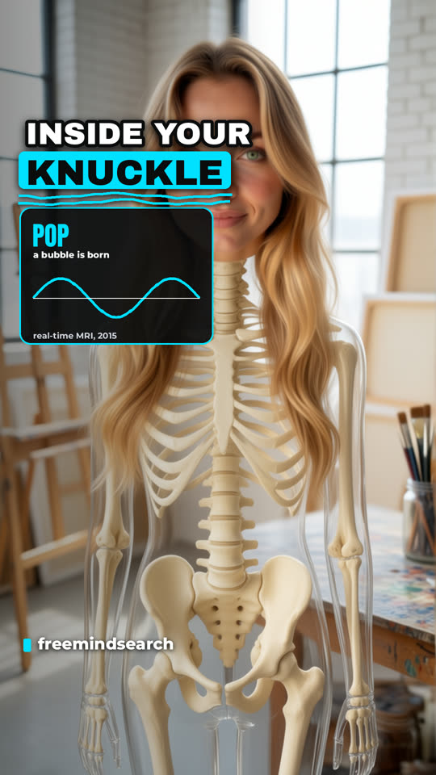

Story
Inside your knuckle: what actually pops
Fly around the twenty-seven bones of the hand into a knuckle joint: when it's stretched, the pressure in its fluid drops and a gas bubble forms in a flash, as real-time MRI showed in 2015. The bubble dissolves slowly, so the same knuckle can't pop again right away.
Watch on FacebookWatch on InstagramWatch on TikTokWatch on YouTube
So, how many of your knuckles can you crack right now?
Sources
- Real-Time Visualization of Joint Cavitation (Kawchuk et al., PLOS ONE, 2015): https://journals.plos.org/plosone/article?id=10.1371/journal.pone.0119470
- Researchers pull fingers to solve why knuckles crack (Science News): https://www.sciencenews.org/article/researchers-pull-fingers-solve-why-knuckles-crack
- Bones of the hand (TeachMeAnatomy): https://teachmeanatomy.info/upper-limb/bones/bones-of-the-hand-carpals-metacarpals-and-phalanges/
- Knuckle cracking and hand osteoarthritis (deWeber et al., 2011): https://pubmed.ncbi.nlm.nih.gov/21383216/
Made with AI: the presenter, voice and visuals are AI-generated. Every story is researched and fact-checked by a person, with its sources listed.